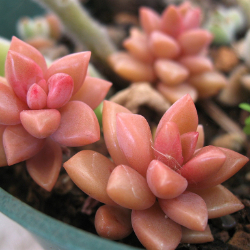

Пахифитум
Описание товара
Пахифитум – миниатюрное декоративное растение из семейства Толстянковые. Каплевидные листочки зеленого, сизо-голубого или розового цвета напоминают камешки. Неудивительно, что пахифитум также называют «лунный камень».
Каждое растение поставляется в подарочной упаковке, включающей декоративное кашпо ручной работы и грунт "Лунный свет".
Характеристики товара
- Цена: 700 ₽
- Страна происхождения: США
- Высота растения: 10 см
Рекомендации по уходу
| Стойкость | |||||
| Освещенность | |||||
| Влажность | |||||
| Полив |
Подробное описание товара
Пахифитум – корневищный многолетник. Корневая система растения очень сильно разветвлена, но сами корешки тонкие. На поверхности земли располагается поникающий или ползучий стебель с редкими воздушными корнями и боковыми отростками. Мясистые стебли очень плотно усеяны сидячими или короткочерешковыми листьями. Длина стебля может достигать 30 см. Листья группируются на молодых частях побега и постепенно опадают у его основания.
Jardinero на заметку
Пахифитум не подвергается атакам насекомых и устойчив к болезням. Единственной проблемой может стать корневая гниль, которая развивается при чрезмерном поливе. Спасти взрослое растение бывает очень трудно, поэтому при почернении основания стебля следует нарезать черенки из здоровых участков и укоренить их. Почву и поврежденные участки уничтожают, а горшок дезинфицируют.